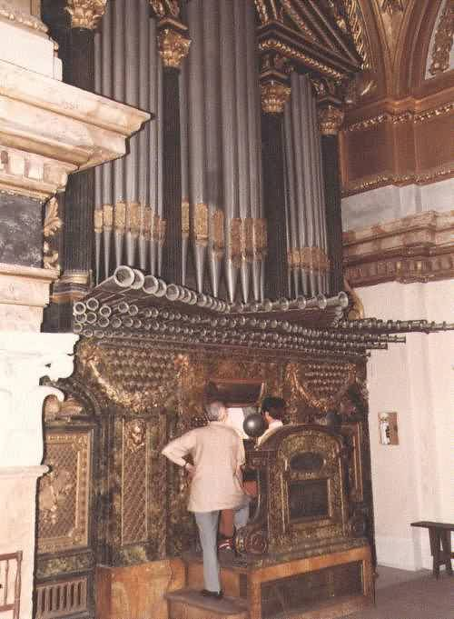

|
Orlo Spanish Orlos Spanish |
Cro Orlo Spanish |
Audsley and Sumner describe Orlo as an 8' Spanish reed stop similar to the Musette or Chalumeau. Audsley also gives the synonym Cro Orlo. Grove describes Orlos as: �An 8' Regal with short, cylindrical resonators, sometimes en chamade and common in Iberian organs by c1730.� Williams states that it was sometimes slightly conical, perhaps pierced with small holes, and describes its tone as similar to other Spanish regals, but thinner than the Dulcayna. Wedgwood considers Orlo to be a synonym for Zink.
The photographs reproduced below are of the Jorge Bosch Bernat-Veri organ at the Royal Palace, Madrid, Spain, and appear here courtesy of Rick Berg.
Osiris contains four examples of Orlo and eighteen examples of Orlos, all at 8' pitch except for one each at 4' and 16'. No examples of Cro Orlo are known. Contributions welcome.
Orlos 8', Manual left & right; Old Cathedral, Salamanca, Spain, unknown 1540 (restored 1985). This is the oldest known example.
Orlos 16' (horizontal), Hauptwerk; Cathedral, Porto, Portugal; Jann 1985.
Orlos 4' I-III, Great; House of Hope Presbyterian Church, St. Paul, Minnesota, USA; Fisk 1979. This stop is a reed mixture whose composition progresses thus: 4', 4'+4', 4'+4'+8', 4'+8'+8'.
Orlo 8' (en chamade), manual; Parroquia, Zahara, Cadíz, Spain; Calvete 1803.
|
Original website compiled by Edward L. Stauff. For educational use only. Orlo.html - Last updated 13 January 2003. |
Home Full Index |